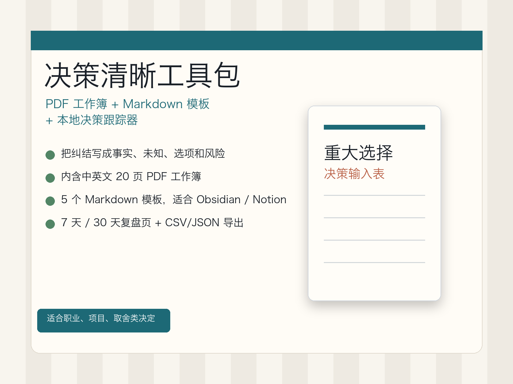
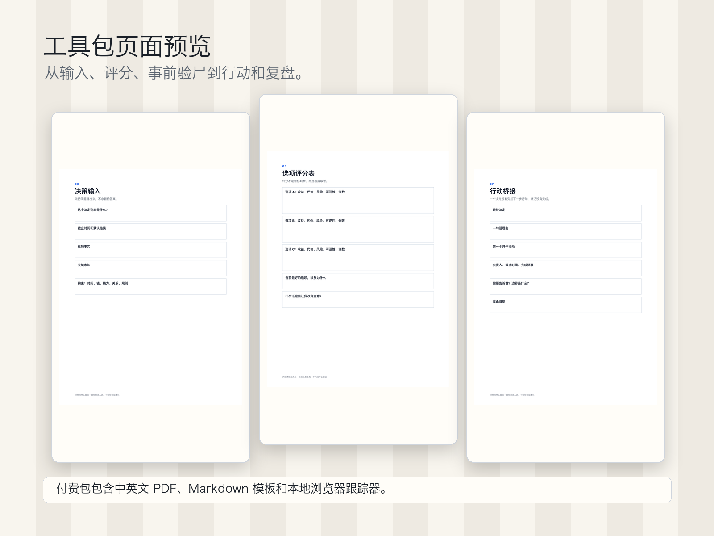
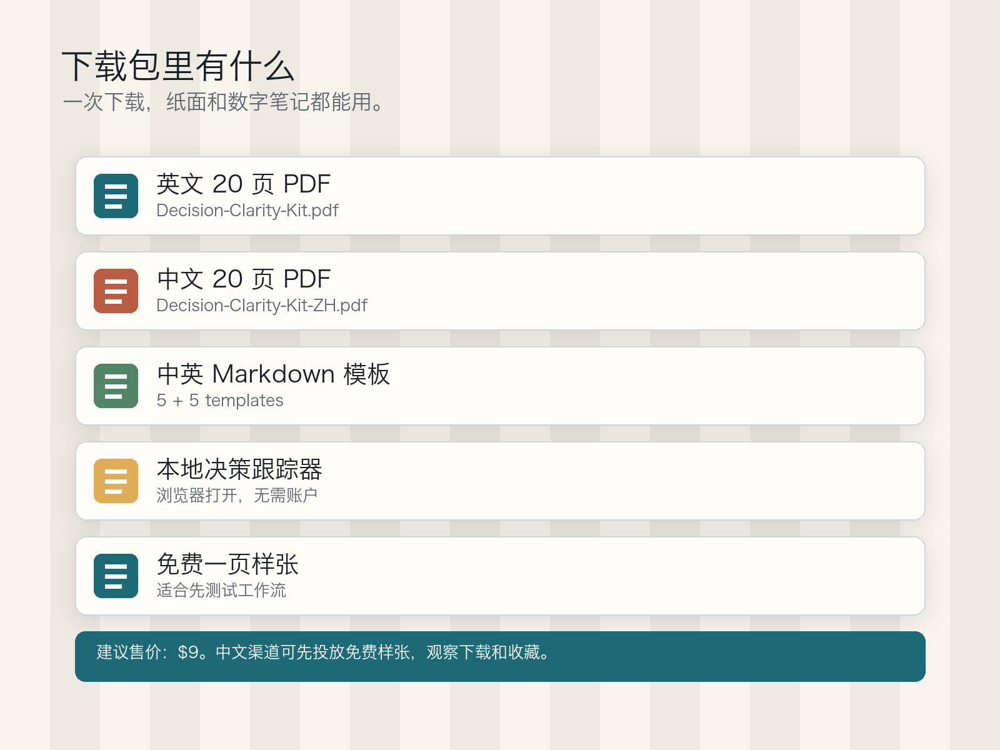
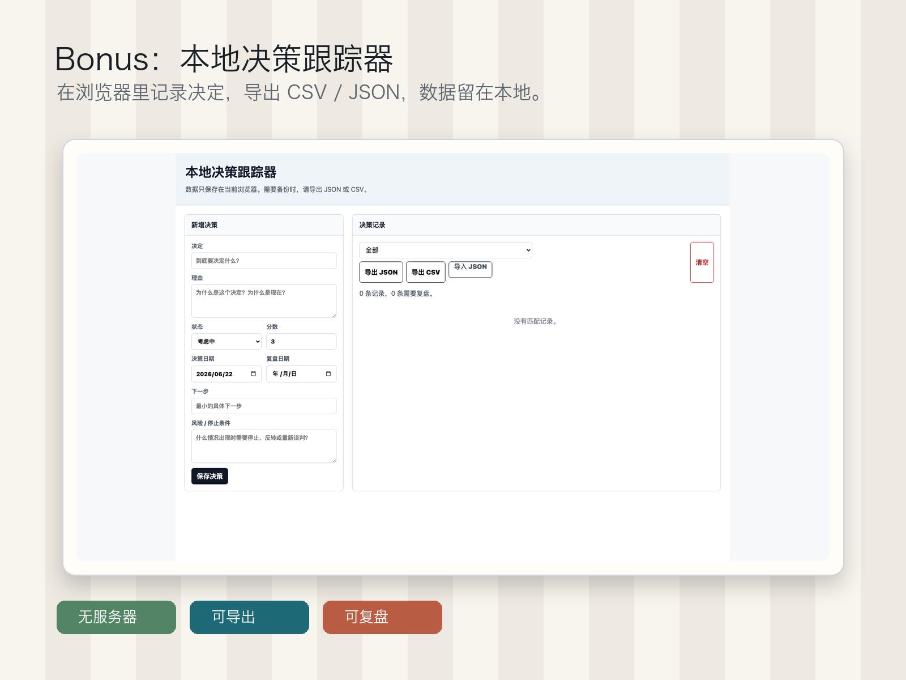
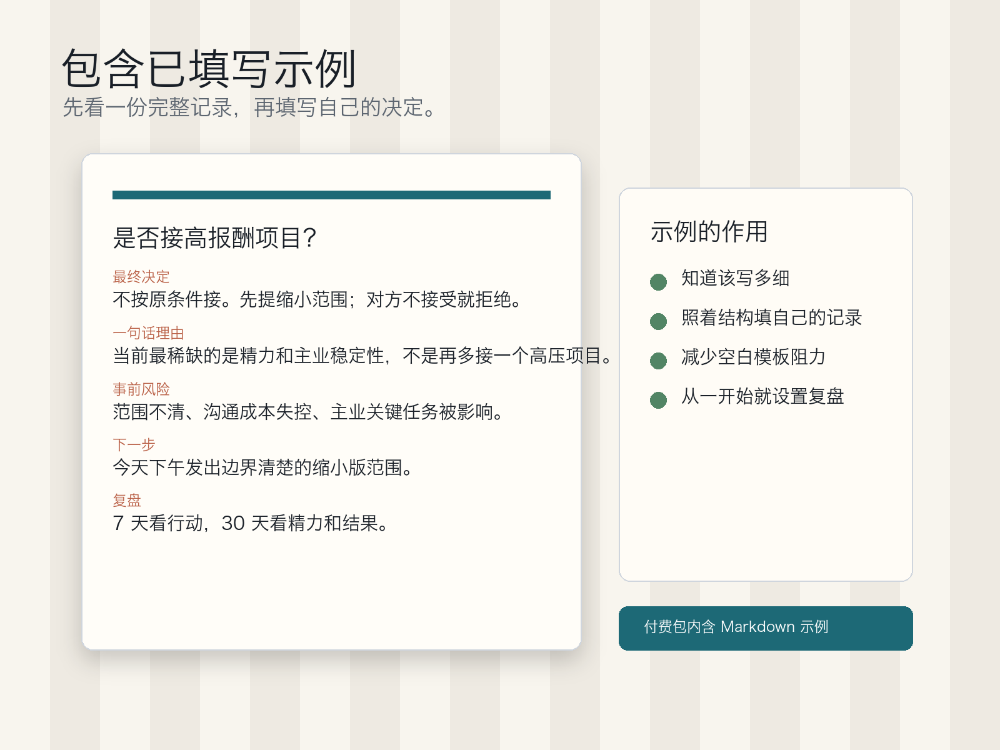

PDF + Markdown + 本地跟踪器
决策清晰工具包
当一个选择在脑子里反复打转时，把它写成事实、未知、选项、风险、 下一步和复盘日期。目标不是假装确定，而是让决策过程可执行、可回看。

适合一直拖着不决的选择
它不会替你做决定，而是帮你把问题拆成事实、未知、选项、风险、 沟通和下一步，避免只在情绪里反复想。
- 决策输入表
- 选项评分表
- 事前验尸和风险页
- 行动桥接页
- 7 天和 30 天复盘页
- 已填写的中文示例记录
- 本地浏览器决策跟踪器
工具包内容


你会得到什么
付费包现在包含中英文双语版本：英文 PDF、中文 PDF、英文/中文 Markdown 模板、已填写示例，以及本地浏览器决策跟踪器。你可以在 Obsidian、 Notion 导入、任意笔记软件或纸上使用。
打开中文免费一页样张Bonus：本地决策跟踪器

包含已填写示例

把选择从脑内循环变成纸面行动
写下你知道什么、不知道什么、可能失败在哪里，以及下一步要做什么。 如果不知道该写多细，可以先看包里的已填写示例。
下载免费样张 ZIP自助反思工具，不构成财务、法律、医疗、心理治疗或心理健康建议。